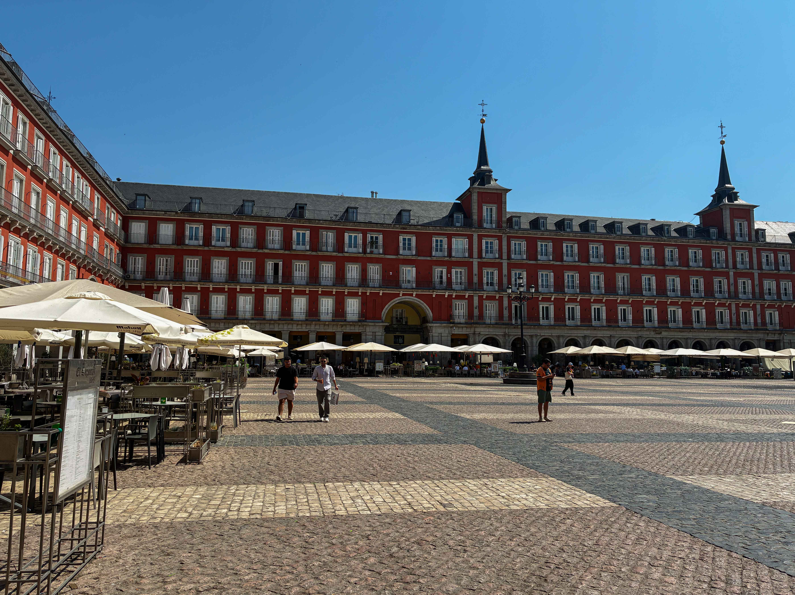

A trip that was 3 years in the making. In 2022 Spain was awarded the World Rogaining Championships which I would need to attend if still President of the International Rogaining Federation so planning and saving began……
Hola - we now live in Spain for 2 months, and 1 month in I finally start to write something
Vuelta a Madrid
Day 1
After slowly transiting and negotiating global communications we got an Uber into our Accommodation who kindly checked us in early which gave us a refresh before going in search of food and a round of Sangria, Patatas Bravas and Pan con Tomat.
 
Plaza Major was very empty but also exceptionally warm with us landing in the middle of a heatwave and around 38 degrees. No sign of Tourist hate and Protests, in fact not much sign of anything.
Nap, evening stroll and a nights sleep.
Day 2
Essentially we had one day in Madrid to do all the things required, which for us generally means just going for a long walk and seeing what we see.

We hit the tourist trap of Chocolateria San Gines for the traditional Spanish/Tourist breakfast of Churros (skinny ones), Porros (fat ones) and Chocolate. Sadly we couldn’t communicate that the chocolate needed to be made with no milk. Avena/Oat milk or Soy only for Annie.
That was followed up by a 10am first Vermut of the trip at the equaly tourist trap of Mercado de San Miguel and more interesting food items than I could get through in a day. So many options….

A walk over to the Palace Real where we got the bonus of turning up for not just the Changing of the Guard (daily) but the Solemn Changing of the Guard which is extended event on the first Wednesday of each month. It commemorates the daily changing of the guard during the reigns of Alfonso XII and Alfonso XIII. The ceremony is a grand spectacle with music, including fifes and drums, and the formal changing of the guard with weapons and salutes, horses, gun carages and around 400 personel. Access to the actual parade ground is by ticket only, but the stairs and grounds in front fo the catherdral were equally populated.


Directly opposite the Palace is the Catedral de Santa María la Real de la Almudena The walk around in here was a great insight into the history of the area with it’s various influences. Effectively the name means the lady of the wall as Maria was hidden in a wall (al-mudena is wall/citdel in Arabic) when the Arabs invaded around the 11th century. Surprisingly modern and only consecrated in 1993, Madrid wasn’t it’s own Diocese until very recently with all things Church being based on Toledo.
Back to the hotel for more napping and heat avoidence (38 degrees) followed by and afternoon walk over near the Sofia and Prado Museum and to see a park. Which because of the temperature was closed.
Day 3
Uber to the Atocha Train Station, a rental car, panic, manual, strange turning on system that required both clutch and brake to be engaged not just brake. That took half a day of random combination of feet, hands and button pushing to work out.
Full Sized and more Images can be seen on the Galleries Page